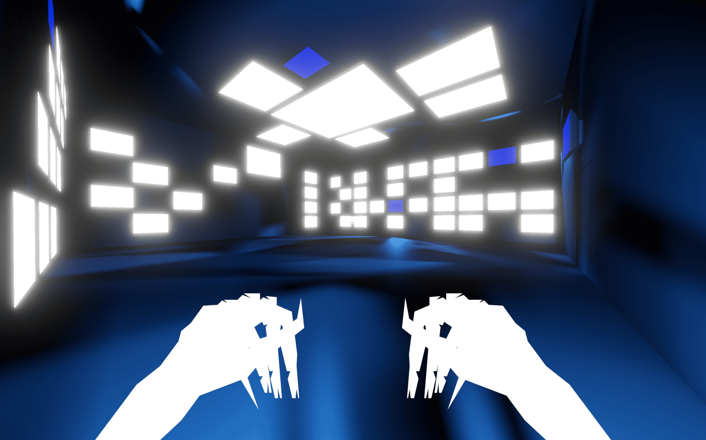
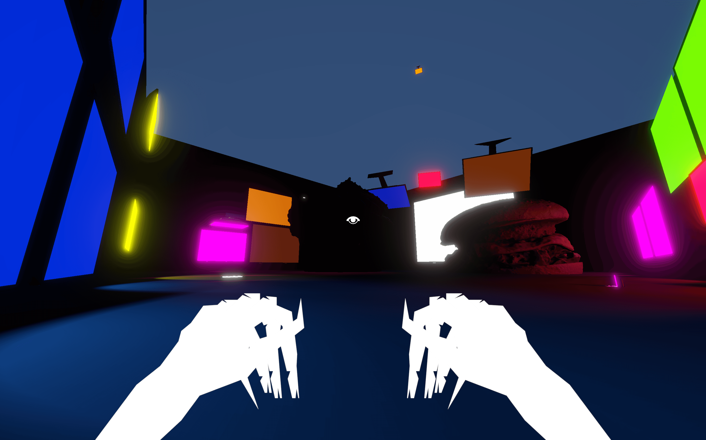

Diplômée d'un Master Arts numériques et cultures visuelles, je conçois des mécaniques d'interaction et des environnements 3D interactifs, dans la mesure où c'est par le jeu que la perception et l'action peuvent être pensées ensemble. J'ai créé Sightrack : Primigenius, un jeu 3D PC / VR piloté par l'orientation de la tête, et travaillé comme QA tester sur Colorless, disponible sur Steam. Je cherche un premier poste de game designer ou de concepteur XR, au sein d'une équipe d'artistes et de développeurs, de telle sorte que la conception se construise à plusieurs.
Parcours
J'ai 25 ans. Ma licence d'Arts plastiques m'a permis d'apprendre une multitude de logiciels et d'étendre ma culture artistique, de telle sorte que j'ai pu trouver ce qui m'anime aujourd'hui : la conception d'expériences et d'environnements 3D. C'est durant ces années que j'ai expérimenté la modélisation et le dépliage UV, avant de me spécialiser en Master dans la création d'environnements et le level design, dont Sightrack : Primigenius est l'aboutissement.
Travail d'équipe
Le travail d'équipe n'est pas pour moi une contrainte mais une condition : au fil de mes projets, j'ai collaboré avec des profils divers, notamment des développeurs, autour d'un même objectif, de telle sorte que chaque idée trouve dans les compétences des autres le moyen de prendre forme. J'aime pousser les idées de chacun, les confronter puis les voir devenir quelque chose de jouable, et je le fais volontiers dans la bonne humeur.
Qualités
AdaptableCurieuseDéterminéeOrganisée
Méthode
J'aime relier la théorie à la pratique : chaque choix de conception, jusqu'à une couleur, doit pouvoir être justifié, de telle sorte que le dispositif éprouve les idées qu'il met en jeu plutôt que de les illustrer.
Ce qui me motive
Ce qui me porte tient en peu de choses : apprendre, découvrir, expérimenter. Face à un nouveau logiciel, un nouveau support ou une nouvelle technologie, je ne cherche pas à les maîtriser avant de m'y confronter mais à les éprouver, dans la mesure où c'est en les manipulant qu'on en comprend les possibilités. Attirée par l'innovation et le prototypage, là où tout reste à inventer, je mène chaque projet jusqu'à ses limites, parce que c'est là qu'une idée révèle ce qu'elle vaut.
UnityVR (OpenXR) et PC · interactions joueur (raycast, tags) · navigation par l'orientation de la tête · gestion de scène
BlenderUV / Modelling / Sculpting / Rigging
Suite AdobeIllustrator, Photoshop, After Effects, InDesign
C#Lecture, compréhension et modification de scripts de gameplay
Projets
2024 – 2025
SightrackPCPuzzle d'exploration en vue subjective piloté par le regard (simulé à la souris). Système d'interaction par tags sous Unity (C#) : un raycast depuis la caméra déclenche déplacements lissés, saut, accroupissement, téléportation interpolée et rembobinage du temps.
2025 – en cours
Sightrack : PrimigeniusVRJeu 3D en réalité virtuelle dont la navigation est indexée sur l'orientation de la tête, sans manette (Unity, OpenXR). Level design et environnement low poly modélisé sous Blender, pensé comme récit : échelle, ambiance, narration.
Expériences
Depuis mars 2026
Barista – Starbucks, Paris (CDI)Préparation, accueil des clients, mise en avant des produits, caisse et optimisation des ventes
2022 – 2023
QA tester – Colorless ↗, par Radcoon, ParisTests d'assurance qualité (QA) du jeu. Dépliage UV (UV wrapping) et modélisation de plusieurs assets 3D dans Blender.
Sept. 2023 – juil. 2024
Service civique – Cyberbase, Saint-DenisAccompagnement de jeunes adultes en création numérique et photographie. Montée en compétence sur la suite Adobe, photographie, captation, sensibilisation aux écrans.
Juil. 2023 – févr. 2024
Graphiste – Sentinel, ToulouseCréation du logo et refonte graphique de la structure, formes vectorielles, patterns, affiches de tournoi.
2023
Graphiste – OracleCréation d'affiches et modification de fichiers PSD.
Formations
BAC+5 · 2024 – 2026
Master Arts numériques et cultures visuellesUniversité Gustave Eiffel, Noisy-le-Grand. Mémoire de recherche-création : Sightrack : Primigenius.
BAC+3 · 2020 – 2024
Licence Arts plastiquesUniversité Paris 8, Saint-Denis
Langues
Français · natifAnglais · avancéPolonais · débutante
Prototype jouable à la souris · Unity · 2024 – 2025
Version PC
Vidéo de présentation du prototype.
Concept
Puzzle d'exploration en vue subjective où le regard est la seule interface : ni bouton ni manette. Dans cette version PC, le regard est simulé par la souris. La caméra lance un raycast, et les objets de l'environnement, balisés par des tags, déclenchent l'action.
Le projet interroge notre rapport aux écrans à travers le pharmakon : ce qui soigne peut aussi empoisonner.
Mon rôle
Game design du prototype et programmation gameplay dans Unity (C#, avec l'aide d'outils d'IA que je lis, comprends et corrige) : boucle de jeu, système d'interaction par tags et réglage des paramètres (vitesse, accélération, durée de téléportation, fenêtre de saut). L'ambiance visuelle (shaders, post-processing) est réglée par mes soins, et chaque choix, jusqu'aux couleurs, est justifié par le propos du projet.
Mécaniques
Raycast depuis la caméra : le tag détecté déclenche l'action
Déplacement avant et arrière, lissé par accélération et décélération
Téléportation interpolée vers la surface visée
Saut avec fenêtre de tolérance (jump buffer)
Accroupissement, temporaire ou stable
Rembobinage du temps : relecture de l'historique des positions et rotations
Technologies
UnityBlenderC#
Captures

01L'espace saturéPour montrer la dépendance mise en décor : des paquets de cigarettes forment des murs, dans une lumière verte étouffante.

02La salle d'écransPour montrer le point de vue du joueur : un espace fait d'écrans lumineux, vu à la première personne, mains au premier plan.03Le regard comme interfacePour montrer le principe du jeu : l'icône d'œil au centre figure le regard, et les objets de l'environnement guident l'action.
Jeu 3D en réalité virtuelle · navigation par l'orientation de la tête · 2025 – en cours
Version VR
Vidéo de présentation du jeu.
Concept
Un jeu 3D jouable sur PC et en réalité virtuelle, où l'on se déplace et interagit uniquement avec l'orientation de la tête : pas de manette. Le choix du head tracking évite la fatigue visuelle d'un suivi des yeux et limite l'effet « Midas Touch », où tout ce que le regard touche se déclenche.
Mon rôle
Conception du dispositif, game design et level design, prototypage dans Unity, modélisation et dépliage UV de l'environnement dans Blender. Le code est développé avec l'aide d'outils d'IA, que je lis, comprends et corrige. Je règle moi-même les shaders et le post-processing, et je justifie chaque choix artistique, jusqu'aux couleurs, par le propos du projet.
Mécaniques
Interaction par tags et raycast depuis la caméra
Déplacements adaptés au regard et à la VR
Développé sous OpenXR avec un casque Pico 2, transposable aux casques Meta
Même jeu jouable sur PC et en VR
Environnement
Décor 3D en style low poly
Modélisation des assets et dépliage UV
Narration par l'espace (environmental storytelling)
Ambiance
Shaders et post-processing réglés par mes soins
Couleur, lumière et contraste choisis pour servir le propos
Technologies
UnityBlenderC#OpenXR
Captures
01La pièce vue d'en hautPour lire le level design d'un coup d'œil : la table au centre organise l'espace, la cuisine occupe un côté, les objets guident le regard du joueur.02La cuisinePour montrer le style low poly et les textures : des objets du quotidien, laissés en place, qui suggèrent une histoire.03La tablePour illustrer la narration par l'espace : repas, appareil photo, guitare, ce que contient la scène raconte ce qui s'y est passé.04Au niveau du solPour donner la notion d'échelle : vu d'en bas, le décor devient imposant. C'est le point de vue que vit le joueur en VR.05Le salonPour montrer l'ambiance et la composition : chaises, guitare, panier de linge, une scène arrêtée dans un moment de vie.
Mémoire de recherche-création · Master 2 · Université Gustave Eiffel
Le regard comme agent actif dans la transformation d'un environnement interactif
Conception et expérimentation d'un dispositif immersif en réalité virtuelle
Problématique
Comment un dispositif de réalité virtuelle peut-il rendre perceptible le pouvoir transformateur du regard, permettant à l'utilisateur de se reconnaître comme agent actif de son environnement ?
Résumé
Sightrack : Primigenius est un dispositif de réalité virtuelle accompagné d'un mémoire de Master 2 en Arts numériques et cultures visuelles, Université Gustave Eiffel, 2025-2026. Le projet part d'une question en apparence simple : comment un dispositif peut-il rendre perceptible ce que le regard transforme sans que nous le remarquions ?
Le mémoire y répond par l'écriture et par l'expérience, de telle sorte que chaque choix de conception y devient une épreuve. Le joueur incarne un être qui doit apprendre à habiter un espace qui n'a pas été pensé pour lui, et dont la perception se réorganise à mesure qu'il avance.
Démarche
Ce projet relève de la recherche-création libre, où le choix du sujet comme celui du support artistique ont été entièrement laissés à l'initiative de l'auteur. Il part d'un constat : nous passons une part croissante de nos journées entourés d'écrans, sans mesurer ce qu'ils font à notre attention et à notre perception. Le mémoire s'appuie sur les analyses de Jonathan Crary sur la temporalité 24/7 et de Byung-Chul Han sur la nuée numérique, dans la mesure où elles éclairent une saturation du regard qui s'opère sans être perçue.
Ce travail n'illustre pas une thèse déjà constituée. Il se conçoit comme une enquête menée conjointement par l'écriture et la conception, de telle sorte que chaque choix technique éprouve une question théorique. Le passage de l'écran à la réalité virtuelle, où la navigation par l'orientation du corps unifie perception et mouvement, en constitue le moment décisif.
Le joueur incarne ainsi un cafard dans une cuisine humaine, dont le téléphone devient une « Boîte à Cœur Soleil » qui concentre l'ensemble du travail perceptif. L'échelle géante et l'environnement pensé comme récit obligent le regard à redevenir exploratoire, à la manière d'un paléontologue qui reconstruit un être disparu à partir de ses seules traces.